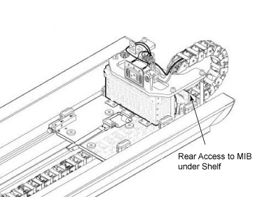
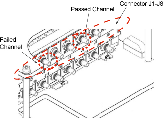
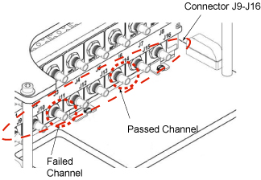
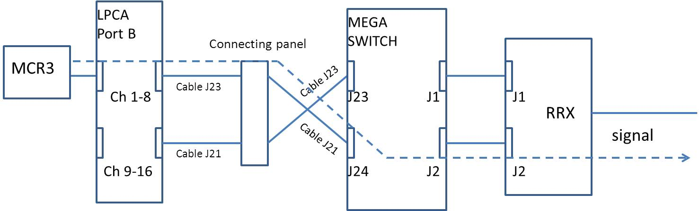
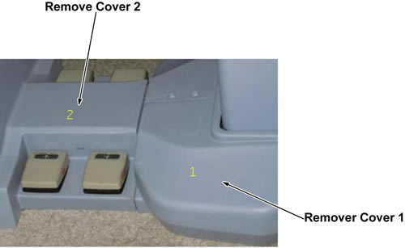

MCR III Chain Tool Troubleshooting
1 Failures after Running Port A Default Tests
- If you find errors after running the default tests (see MCR III Tool) refer to Table 3 to determine your response: note: Channel to Channel Variance Failure. This test fails when channel values are not within set tolerances. Because tolerances are fairly loose, there is no way to objectively isolate the failure point/cause. In order to determine which channel may be problematic, view the channel output values in the test results and look for some value whose variance is dissimilar to the others.
2 Isolating Port A Failures
Port A: Dead Channel Failure: If the ON and OFF versions of the Dead Channel tests of any singular channel has opposite results (for example the Dead Channel (OFF) test for Channel 2 fails but the Dead Channel (ON) test for Channel 2 passes), the Multicoil Interface Box should be replaced. If the Dead Channel tests for ON and OFF both failed, perform the following.
- On the back of the MIB (see Figure 1) identify the cables from the channel that failed the Dead Channel test and a cable from any channel that passed the Dead Channel test.
Figure 1. Multi-coil Interface Box (MIB) Rear Location

- On the upper level, swap the passing channel with the failing channel (see Figure 2), and then re-run the Port A test.
Figure 2. MIB Channels 1-8 IN (J1-8)

If the problem moved to previously passing channel, replace the cable segment between Port A and the MIB. Return cables to their original positions.
If the problem remains on the same channel, return cables to their original positions and proceed to MCR 3 Tool Troubleshooting.
- On the lower level, swap the passing channel with the failing channel (see Figure 3), and then re-run the Port A test.
Figure 3. MIB Channels 1-8 OUT (J9-16)

If the problem moved to the previously passing channel, replace the cable segment between the MIB and the Mega Switch. Return cables to their original positions.
If the problem remains on the same channel, return cables to their original positions. You need to replace the Multicoil Interface Box.
3 Isolating Port B Failures
- The Figure 4 shows the case where MCR3 was used to check the channels 1-8 of LPCA port B. For the channels 9-16 of LPCA port B, we need to swap the cables of J21 and J23. The Figure 5 shows the case.
Figure 4. MCR3 test for LPCA port B channel 1-8

Figure 5. MCR3 test for LPCA port B channel 9-16

- All the 16 channels fail
In this case, the most possible root course is the Megaswitch. Change the Megawitch and do the tests again
- Both the tests of channels 1-8 and channels 9-16 fail, and the failed channels are corresponding with each other. For example channel 1 is corresponding with channel 9; channel 2 is corresponding with channel 10 and so on.
In this case, the most possible root cause is the LPCA port B coil connector. Change the Port B coil connector and do the test again. If the error is the same, change the MegaSwitch and do the tests again.
- The test of the channels 1-8 passes, but the test of the channels 9-16 fails.
In this case, first check the connecting from MegaSwitch to RRx J2, and change the cable of J21 from Connector panel to MegaSwitch, and do the test again. If the error is the same, MegaSwitch issue is suspected.
- The test of the channels 1-8 fails, but the test of the channels 9-16 passes.
In this case, first check the connecting from MegaSwitch to RRx J1 and change the cable of J23 from Connector panel to MegaSwitch, and do the test again. If the error is the same. MegaSwitch issue is suspected.
4 Isolating express PA Coil Test Failures
- If you find errors after running the express PA coil - cradle test (see MCR III Tool for SV 1.5T), the test result Figure 6 is shown. In this case, please follow from 2.
Figure 6. Example of Fail Result

- If failed in test, please try re-connect cable connector again and test again.
- If it's still failed, connect MCR Tool to convert board at Dock and run diagnostic program for express coil again as follows.
- Remove cover 1, 2 at dock area.
Figure 7. Remove Covers

- Remove DC cable ASSY _5346920 and RF cable ASSY_5346919.
Figure 8. Remove Cables

- Connect those 2 cable to MCR3 Tool, Then run diagnostic program for express PA coil-Dock
Figure 9. Connect Cables

- If passed, replace cable ASSY in Cable Track.
- If failed, replace cable ASSY from Mega Switch to Dock.
- Remove cover 1, 2 at dock area.
- Restore the cables of PA Coil or Convert Board at Dock.
5 Finalization
No finalization steps.